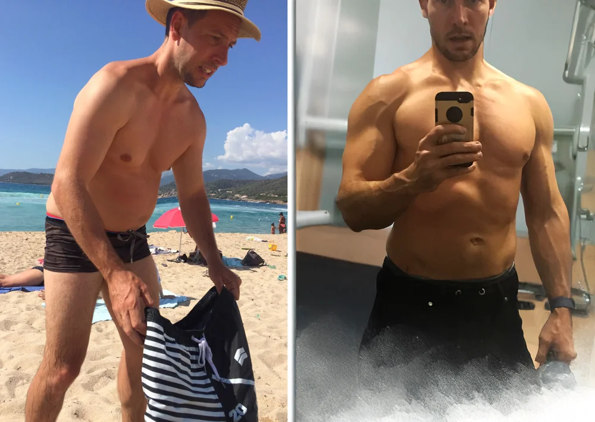

You keep looking for
a better plan.
You compare exercises and watch another video until your time to train is gone.
Strength coaching for adults with ADHD
Get stronger with two focused workouts a week, a personal plan, and support from Derek, a coach who has ADHD too.
First 20 members join free.
Includes a personal starter plan + 1:1 call
scheduled within your first week.
Check current availability and terms on Skool.
See exactly what is includedKnow which exercises to do. Learn where to focus. Get help when the plan needs to change.
Derek Rue · Personal trainer · Certified Wim Hof Method instructor
Your starting point
2 focused strength
workouts a week.
Exercises chosen for your experience, equipment and available days.
You already want to train
You compare exercises and watch another video until your time to train is gone.
You lose track of your rest, your next exercise, and how long you have been there.
Repeat the week? Change the plan? One missed session becomes another week of deciding.
A routine lists exercises. You still have questions about how to do them, what to substitute, and how to return after a missed week. Ask Derek for help with those decisions.
See the coachingHow ADHD Rebuild works
Choose your exercises with Derek. Learn where to put your attention while you work. Ask for help when the plan needs to change.
Build your starter plan around your goals, experience, equipment and available days. Know which exercises you are going to do.
Learn setup, controlled movement and effort. Derek breaks the set into focus cues, giving you something specific to work on beyond counting reps.
Missed a session? Cannot use the equipment? Ask in the private group for help adapting your plan and choosing your next workout.
An example of Derek's coaching cues
An example of where to put your attention. Your exercise, effort and rest are personal.
Find the rhythm and feel the muscles working.
Keep your attention on the movement, without tensing everything else.
Stay with the movement as the effort builds.
For timed sets, Derek's closing cue is complete concentration for the final 10 seconds. Guided breathing practice is taught separately from lifting.
Planned group sessions: two 30-minute sessions a month with a check-in, Q&A, and 15 to 20 minutes of guided breathing. Recordings will be added as sessions happen.

Meet your coach
I'm Derek. I used to spend two hours in the gym and far too much of it on my phone. I kept changing programs because I thought the next one would make me consistent.
Fewer distractions, more focused work, and attention to effort and recovery changed my training. ADHD Rebuild helps you apply that to yours.
The founding member offer
Join our private Skool community. Once admitted, open Start here and introduce yourself.
Share your goals, experience, equipment and available days. Arrange your 1:1 call within your first week.
Know which exercises you will do. The plan can be adjusted as you learn what works.
Use Questions in the private group when you need help with training or adapting your plan.
Freeprivate group access for the first 20 members
Planned bonus: Train with Derek coach app, with free member access. Filming comes first.
Join ADHD Rebuild on SkoolOpens the Skool About page. Check current availability and terms before joining. Paid membership is planned after the first 20.
Planned free member bonus
The plan for the coach app: Derek's own exercise videos and recorded coaching, clear cues during a set, and help when getting started is the hard part.
Not available yet. Filming comes first. Free member access is planned, with no release date set. Updates will be shared in Skool.
Planned home screen / illustration
Go to your workout and exercise guidance.
Get help taking the first step.
A preview of the direction, not a working app.
Before you join
You do not have to get fit before asking for help.
The first 20 members get free private group access, a personalized adjustable starter plan, and a 1:1 call scheduled within their first week. Paid membership is planned after the first 20. Check current availability and membership terms on the Skool About page before joining.
Skool hosts our private community. Create or sign in to your Skool account and follow the joining steps. Once admitted, open Start here, introduce yourself, and share your goals, experience, equipment and available days. Then arrange your call and starter plan with Derek.
You get a personalized adjustable starter plan, a 1:1 call scheduled within week one, and support with training questions in the private group. The call is one-to-one; day-to-day training questions go in the group. Bring the specific exercise or part of the plan you need help with.
Tell Derek about the break and your current experience. Start from where you are now, with a plan you can ask for help adjusting. You do not need to get fit before joining.
Two focused strength workouts a week, plus everyday activity, is the usual starting point. Your session length and exercise choices depend on your experience, equipment and plan. Discuss days and a session length that fit your week with Derek.
Gym access is not a condition of joining the community. Tell Derek what equipment and space you have so you can discuss a suitable plan.
No. Neither is required. Strength training, practical breathing and focus tools, and personal support are the starting point. Optional practices are discussed individually.
The Train with Derek coach app is a planned free member bonus, not a released product. The direction is Derek’s real exercise videos and recorded coaching, with help getting started. Filming comes first. No release date is set; updates will be shared in Skool.
No. This is fitness coaching for adults. A formal ADHD diagnosis is not required to join. It does not replace medication or clinical care. Guided breathing is separate from lifting, done seated or lying down, never while driving or in or near water.
ADHD Rebuild with Derek
Tell Derek where you are starting. Build your plan together.
Join ADHD Rebuild on SkoolFirst 20 members join free, with a starter plan and a call scheduled within week one. Check availability and terms on Skool.